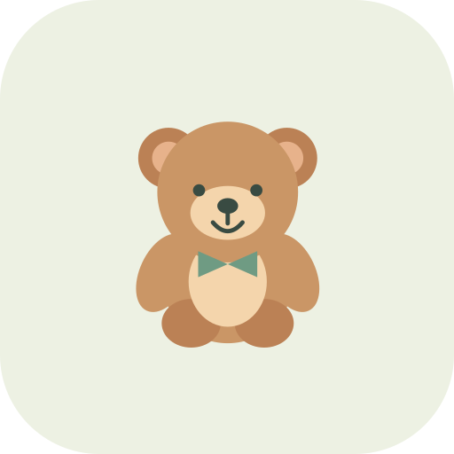

正在打开小课堂…
适合家长陪同的 3 岁左右孩子。一次只玩一课，约 5–7 分钟是建议；孩子想停，随时结束。不要求记住、答对或开口。
先招手打招呼 → 点图听词 → 听音找两张图中的一张 → 自愿跟着说 → 关屏玩实物。家长示范一次，给孩子留一点时间。
固定英语音频由 Kokoro Heart AI 合成，美式英语；声音文件已保存，播放时不请求 AI。课程内无账号、广告、排名、签到或发音评分。默认不录音；家长可以主动开启下方本机短录音回放。不上传儿童声音，不收集姓名、照片或位置。设备语音仅用于点击重试，发音与离线可用性因 iPad 而异。声音来源与许可。
每张词图和短句旁点“🎤 我来读”，按“听示范 → 我来读 → 听自己 → 再试一次”玩一小会儿。默认关闭，家长先明确允许；录音最多 12 秒，不上传、不评分，只在会话内存。换词、换页面、关闭跟读面板即删除；进入后台会同时关闭模式。浏览器不支持或拒绝许可仍可完整听词学习。
添加主屏幕不会自动下载课程。先在联网时点击下方下载，等到“全部课程已核验，可离线”后，再断网试着打开。浏览器可能清理缓存，必要时重新下载。
正在检查离线资源…
用 Safari 打开 → 分享 → 添加到主屏幕。横竖屏都能用。先调好音量；没有声音时，点一次图片重试。
仅在此浏览器匿名保存玩过的课程与当前步骤；不保证永久保存，也不会同步到其他设备。家长可以清除。
默认关闭。